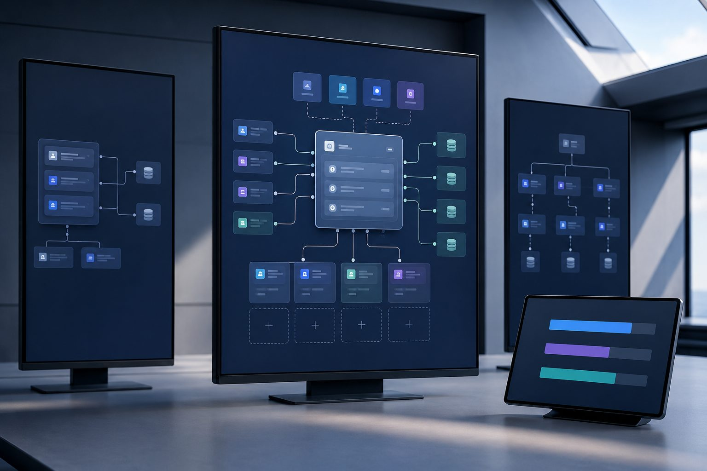
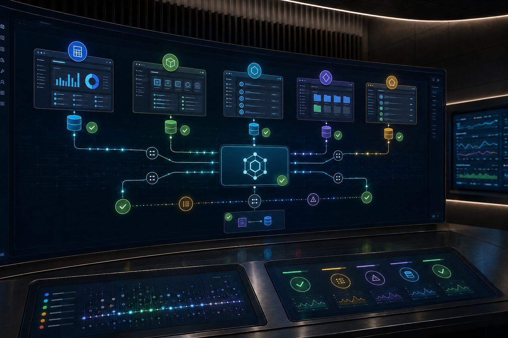

Business software, built around your operation
Software that fits how the work already happens.
One network — sites, plants, storefronts
Understood first. Connected second. Maintained for years.
01 — The problem
Most systems were bought, not fitted.
A plant, a distributor, and a property group can run the same named platform and still have nothing in common. What differs is the workflow — the approvals, the exceptions, the way a change order or a short shipment actually gets handled.
We start there. The foundation is chosen after the workflow is understood, and every configuration afterwards answers to it.






02 — Reach
One network across sites, plants, and storefronts.
Manufacturing floors, construction schedules, distribution centres, property portfolios and commerce fronts — connected through integration rather than replacement.
Technology capability03 — Sectors


Hover to expand · click to open the sector Tap to expand · tap again to open the sector